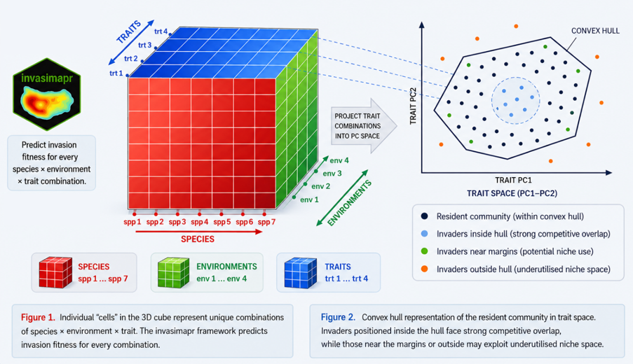
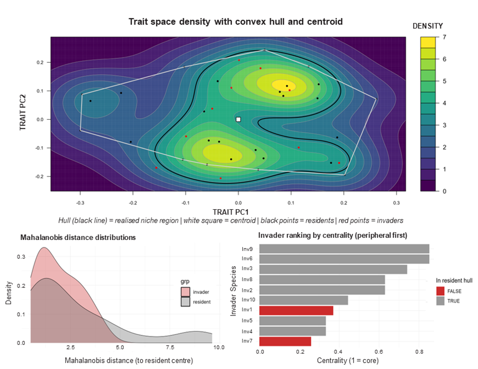
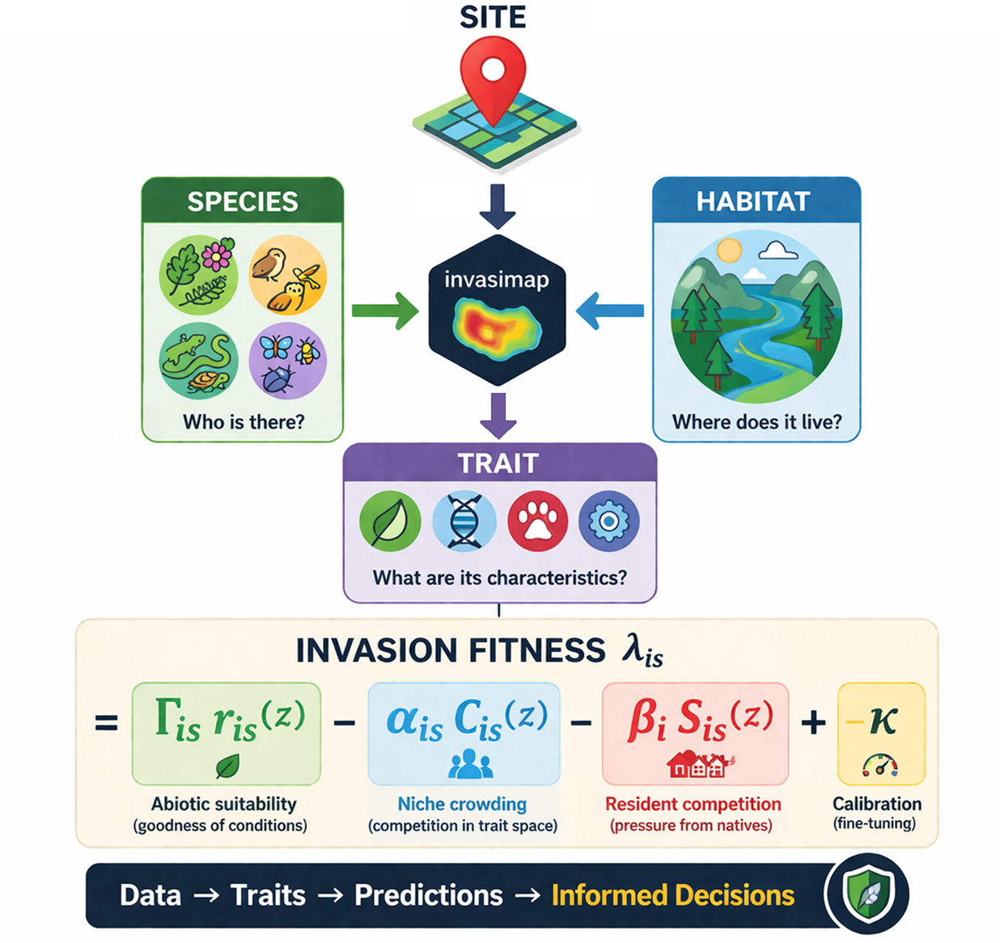
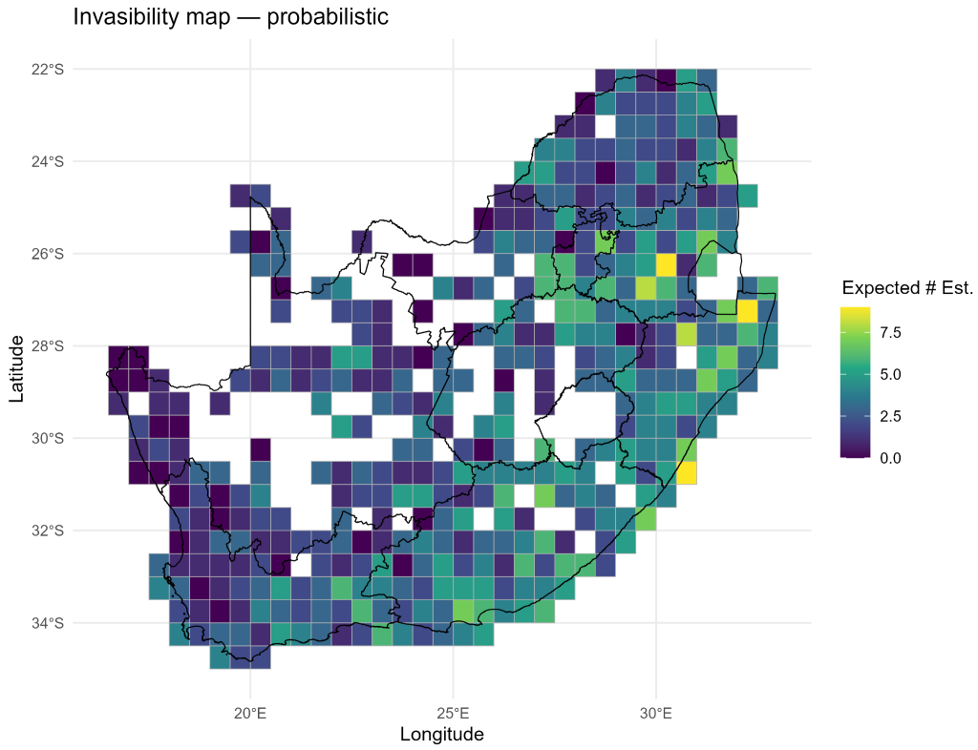
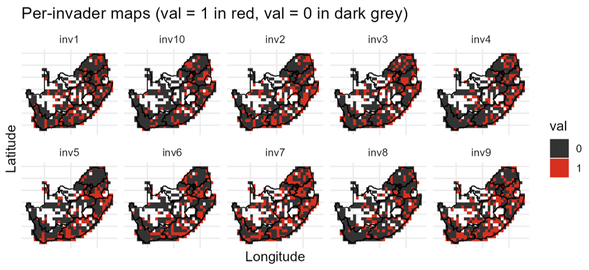

invasimapr is an open-source R package that quantifies and maps community-level invasion fitness and site-specific invasibility. Biological invasions are a leading driver of biodiversity loss, yet invasion outcomes depend jointly on three things: the functional traits of candidate invaders, the abiotic suitability of local environments, and the biotic resistance of resident communities. Most risk-assessment tools address only one or two of these axes at a time. invasimapr integrates all three into a single, reproducible workflow that resolves invasion fitness at the scale of individual species and sites, and turns it into decision-ready indicators of which invaders are most likely to establish, where invasions are most likely to occur, and which ecological mechanisms drive that risk.
invasimapr is part of the B-Cubed (b3verse) toolbox and integrates tightly with dissmapr for biodiversity data acquisition and spatial gridding.
How it works
invasimapr is built on the Invasibility Cube: a unified species x environment x trait structure that predicts invasion outcomes across every combination of candidate invader and site. Trait combinations are projected into a principal-component trait space, where the convex hull of the resident community defines the competitive arena an invader must enter.

At its core, invasimapr estimates invasion fitness: the per-capita growth rate of a rare invader introduced into a resident community at ecological equilibrium. When this is positive the invader can increase from low density and is predicted to establish; when negative it is expected to fail. Invasion fitness is decomposed into three mechanistic components:
- Abiotic suitability – how well the invader’s traits match local environmental conditions.
- Niche crowding – how strongly the invader’s traits overlap with the resident community in a shared trait–environment space.
- Resident competition – how saturated the site already is with abundant residents.
When abiotic benefits outweigh competitive penalties, a species attains positive invasion fitness and a higher probability of establishment. Geometrically, invaders near the centroid of the resident trait cloud face strong competition from look-alike residents, while those toward the margins (or outside the hull) find less crowded niche space and weaker biotic resistance.

Installation
You can install the development version of invasimapr from GitHub with:
# install.packages("remotes")
remotes::install_github("b-cubed-eu/invasimapr")The workflow
invasimapr is modular, transparent and fully reproducible, progressing in three phases: inputs and setup, from data to invasion fitness, and prediction and indicators. It is built around eight wrapper functions that run end-to-end with minimal intervention, each returning an updated invasimapr_fit container:

-
prepare_inputs()– assemble and align community, trait and environmental matrices. -
simulate_invaders()– generate hypothetical invader trait profiles from the resident pool (or import your own). -
prepare_trait_space()– build the shared Gower/PCoA trait space, convex hull and niche-crowding indices. -
model_residents()– fit GLMMs to resident abundance and derive standardised predictors. -
learn_sensitivities()– estimate trait-dependent (and optionally site-varying) slopes for suitability, crowding and competition. -
predict_invaders()– project invaders into the resident model space. -
predict_establishment()– compute per-invader, per-site invasion fitness and map it to establishment probability. -
summarise_results()– derive species invasiveness, site invasibility and trait-effect indicators with maps and plots.
Example
A minimal, reproducible example using the demo data shipped with the package (415 sites, 27 resident species, 20 traits and 10 environmental layers):
library(invasimapr)
# Demo data: one long table with sites, coordinates, species counts,
# environment (env*) and trait (trait_*) columns.
csv <- system.file("extdata", "site_env_spp_simulated.csv.gz", package = "invasimapr")
if (!nzchar(csv)) csv <- "inst/extdata/site_env_spp_simulated.csv.gz" # source fallback (pre-reinstall)
site_env_spp <- read.csv(csv)
# invasimapr expects a `site` key; coerce character columns to factors.
long_df <- site_env_spp
names(long_df)[names(long_df) == "site_id"] <- "site"
chr <- vapply(long_df, is.character, logical(1))
long_df[chr] <- lapply(long_df[chr], as.factor)
# Step 1: assemble and align the core matrices in one call
fit <- prepare_inputs(
long_df = long_df,
site_col = "site",
env_prefix = "^env",
trait_prefix = "^trait",
make_plots = FALSE
)
fit
#> <invasimapr_fit>
#> stages: inputs
#> sites: 415 | residents: 27 | invaders: NAThe remaining steps extend the same fit object. They involve model fitting and are shown here without evaluation for brevity:
# Step 2: simulate hypothetical invaders from the resident trait pool
traits_inv <- simulate_invaders(
resident_traits = fit$inputs$traits_res,
n_inv = 10, mode = "columnwise"
)
# Steps 3-8: trait space -> resident model -> sensitivities ->
# invader prediction -> invasion fitness -> indicators
fit <- prepare_trait_space(fit, traits_inv = traits_inv)
fit <- model_residents(fit)
fit <- learn_sensitivities(fit)
fit <- predict_invaders(fit, traits_inv = traits_inv)
fit <- predict_establishment(fit, option = "C", prob_method = "probit")
fit <- summarise_results(fit)See the Get started vignette and the tutorial articles for the full step-by-step workflow with real data.
Outputs and indicators
By marginalising the species × site fitness surface across species, sites or traits, invasimapr produces three complementary families of indicators:
- Species invasiveness – how broadly a species can establish across sites (supports watchlists and early detection).
- Site invasibility – how open a community is to newcomers (identifies invasion hotspots for surveillance and conservation planning).
- Trait invasiveness – which functional attributes most strongly drive establishment (reveals the mechanistic basis of risk).

Applied to South African butterflies, for example, invasimapr maps binary establishment for each candidate invader on a common grid, making spatial patterns directly comparable across species:

Documentation
- Package website: https://b-cubed-eu.github.io/invasimapr/
- Source code: https://github.com/b-cubed-eu/invasimapr
- B-Cubed project documentation: https://docs.b-cubed.eu/
Citation
To cite invasimapr, run citation("invasimapr") in R, or use:
MacFadyen, S., Yahaya, M.M., Trekels, M., Kumschick, S., Landi, P. & Hui, C. (2025). invasimapr: Workflow to Visualise Trait Dispersion and Assess Invasibility. R package version 0.2.0. https://doi.org/10.5281/zenodo.20842472
Meta
- We welcome contributions, including bug reports, via the issue tracker.
- License: MIT.
- Please note that this project is released with a Contributor Code of Conduct. By participating you agree to abide by its terms.
Acknowledgments
This software was developed with funding from the European Union’s Horizon Europe Research and Innovation Programme under grant agreement ID No 101059592.